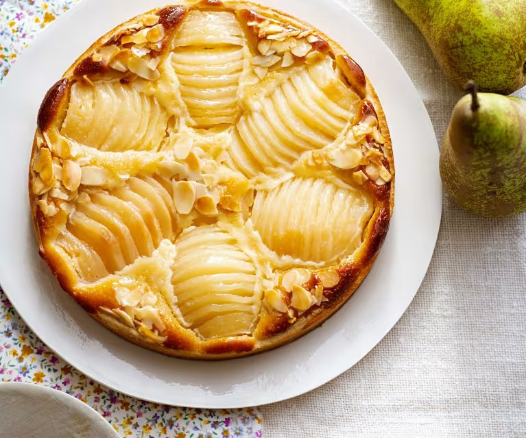

Tarte amandine aux poires
Ingredients
- 125 g de sucre
- 160 g de beurre mou
- 80 g d'amandes en poudre
- 1 pincée de sel
- 95 g d'oeuf
- 180 g de farine T55
- 5 g de fécule de maïs
- 1 c. à c. de rhum
- 450 g de demi-poires au sirop
- amandes effilées

Préparation
Étape 1
Pulvériser 65 g de sucre 15 sec/vitesse 9. Ajouter 100 g de beurre mou, 20 g d'amandes en poudre et 1 pincée de sel, mélanger 1 min/vitesse 3.
Étape 2
Ajouter 35 g d'oeuf et mélanger 30 sec/vitesse 4. Ajouter 180 g de farine T55 et pétrir Pétrin/1 min.
Aplatir la pâte entre 2 feuilles de papier cuisson et laisser reposer 2h au réfrigérateur.
Étape 3
Foncer un cercle ou un moule à tarte (Ø 20 cm) et réserver au frais.
Étape 4
Mélanger 60 g de beurre mou, 60 g de sucre, 60 g d'amandes en poudre, 60 g d'oeuf, 5 g de fécule de maïs et 1 c. à c. de rhum 1 min/vitesse 5. Réserver 1h au frais.
Étape 5
Préchauffer le four à 180ºC. Éponger 450 g de demi-poires au sirop et les entailler dans la largeur sans les couper jusqu’au bout.
Étape 6
Étaler la crème d’amande sur le fond de tarte, disposer les poires et parsemer d’amandes effilées. Cuire 35 à 40min.
Conseils
- Piquer le fond de tarte et le mettre 30min au congélateur avant d’enfourner.
- Pour une tarte brillante, la badigeonner de confiture d’abricots chauffée avec un peu d’eau.